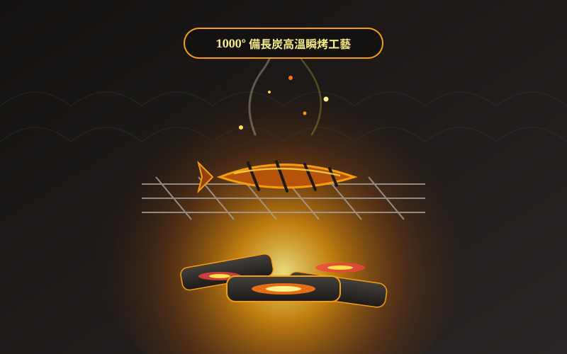
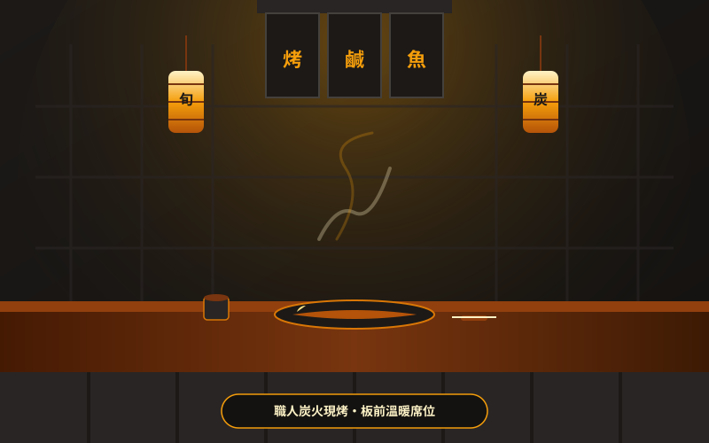

嚴選挪威寒帶鯖魚
只選用北大西洋極寒冰冷海域野生鯖魚，魚脂含量達 28% 以上黃金比例，肉質結實細緻、油花豐沛。
ABOUT CHARCOAL GRILLED FISH
烤鹹魚從尋找最純粹的海味與炭火焦香出發，以職人精神對待每一道工序，為現烤鹹魚愛好者營造有溫度的相聚空間。
OUR STORY
「烤鹹魚」創立的初衷很單純——我們想重現兒時記憶中，炭火爐邊那股讓人垂涎欲滴的焦香與金黃微脆的魚肉口感。
市面上許多烤魚為了求快，往往預先半烤再加熱，失去了肉汁的鮮活與酥脆的靈魂。我們選擇了一條更費時卻更真誠的路：堅持每條魚都從冰冷海洋嚴選，手工薄鹽熟成，並在客人點單後才擺上千度備長炭火爐。
看著油脂滴入炭火激起白煙，聽著滋滋作響的脆皮聲，這是我們想獻給每位客人的美味儀式。
炭火焦香油脂作響，獻給現烤鹹魚愛好者的極致旬味。
FOUR PILLARS
不走捷徑、不省工序，
將簡單的烤魚打磨成極致饗宴。
只選用北大西洋極寒冰冷海域野生鯖魚，魚脂含量達 28% 以上黃金比例，肉質結實細緻、油花豐沛。
採用赤穗天日鹽遵循傳統手工薄漬，搭配冷風一夜干工法微熟成，鎖住水分並濃縮出天然甘甜海味。
選用高品質備長炭，以高達 1000°C 之遠紅外線高溫均勻透射，瞬間封鎖肉汁，外酥內嫩絕不乾柴。
每道料理皆於下單後精準炭烤 12 分鐘，剛離火立刻上桌，保留魚皮爆汁脆度與剛出爐的最高美味境界。

DINING SPACE
推開木質拉門，撲鼻而來的是溫暖醇厚的炭木香氣與日式烤魚焦香。我們特別規劃了沉浸式「板前吧檯席」，讓您在品嚐熱騰騰定食的同時，近距離欣賞職人專注調火、翻轉炙烤的熱情手藝。
無論是一個人下班後放鬆小酌、兩人溫馨約會，或是三五好友家庭聚餐，烤鹹魚的每個座位都為您保留最自在溫潤的日料時光。
JOIN US TODAY
現點現烤需時 12–15 分鐘，建議您提前來電預留席位或外帶。